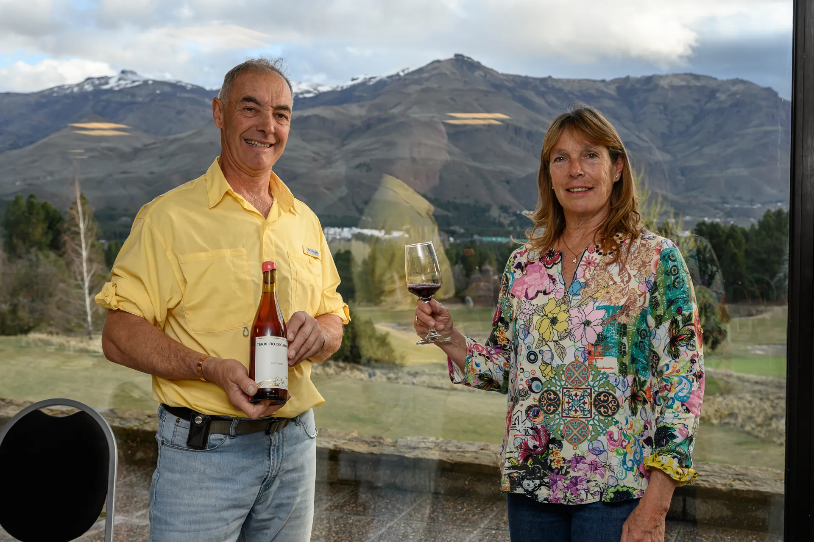
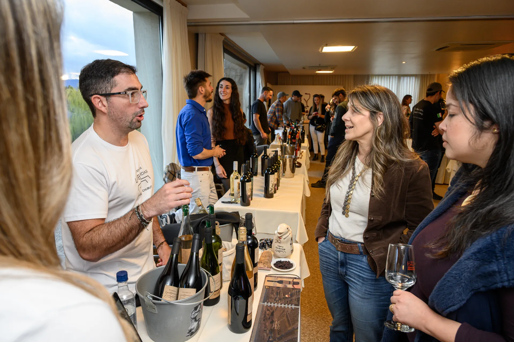
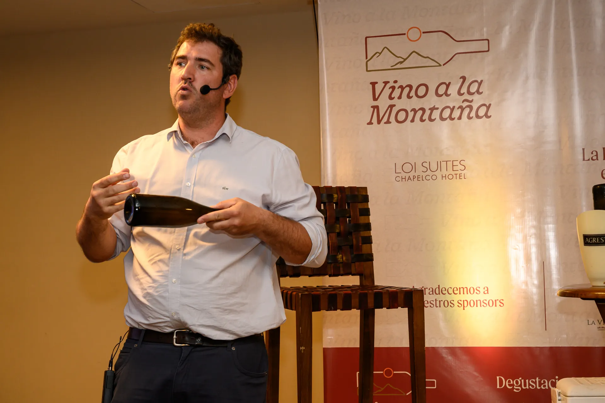
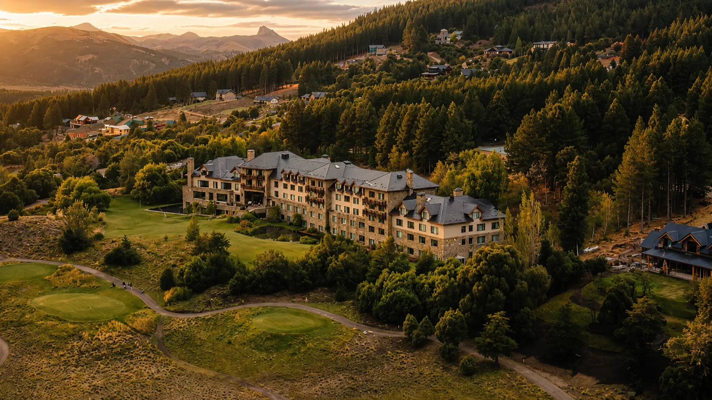

Vino a la Montaña: la Ruta del Vino de la Patagonia en San Martín de los Andes
Bodegas reconocidas, pequeños productores, vinos que sorprenden,
gastronomía y encuentros que acercan la Patagonia del vino a uno de
los grandes destinos de la cordillera.
Vino a la Montaña reúne en San Martín de los Andes a productores,
profesionales y público alrededor de los vinos de Patagonia.
Vino a la Montaña reúne cada año en
San Martín de los Andes a bodegas y productores de distintos lugares
de la Patagonia. Durante dos jornadas es posible recorrer la región
a través de sus vinos, volver a encontrarse con etiquetas conocidas
y descubrir otras que, por su escala, producción limitada o
distancia, pocas veces llegan juntas al público.
La Patagonia del vino tiene una diversidad que crece con cada nuevo
proyecto. Neuquén desarrolla viñedos fuera de sus zonas tradicionales,
Río Negro conserva una historia centenaria y algunos de los viñedos
más reconocidos de la región, mientras Chubut llevó la vid hacia
lugares donde las condiciones exigen otra manera de pensar la
viticultura. Ese mapa continúa ampliándose y permite encontrar vinos
nacidos en lugares muy diferentes entre sí.
Cada lugar aporta algo propio y eso finalmente llega a la copa.
Pinot Noir, Chardonnay, Merlot, Malbec, Cabernet Franc y otras
variedades encuentran expresiones distintas según el clima, los
suelos, la altitud, el agua y las decisiones de quienes trabajan
esos viñedos.

Productores de Patagonia presentan sus vinos en San Martín de los Andes,
con la montaña como parte del encuentro.
En los encuentros con productores aparece con frecuencia algo que
merece atención. Hay vinos de pequeñas producciones que sorprenden
por su calidad y que todavía circulan muy poco fuera de su lugar de
origen. Algunos nacen en apenas una o dos hectáreas y se elaboran en
partidas muy pequeñas. Llegar hasta ellos puede resultar difícil y
muchas veces quienes trabajamos cerca del vino patagónico seguimos
descubriendo proyectos que desconocíamos.
Vino a la Montaña permite encontrarlos. Las bodegas de mayor
trayectoria comparten el encuentro con pequeños productores que
llegan a San Martín de los Andes para presentar sus vinos, conversar
con el público y generar vínculos con restaurantes, hoteles,
vinotecas, sommeliers y compradores de la región.
San Martín de los Andes ocupa un lugar importante en esta propuesta
porque existe un interés genuino por los vinos patagónicos. Lo vemos
en las ferias, degustaciones y presentaciones que se realizan en la
ciudad, donde el público prueba, pregunta por el origen, quiere
conocer al productor y compra. Ese interés también aparece en la
gastronomía, la hotelería y el comercio regional, con una decisión
cada vez mayor de incorporar estos vinos a su oferta.
Es una idea que venimos impulsando y que empieza a dar resultados.
El vino de la región tiene que ganar presencia en la mesa patagónica
porque hay calidad, diversidad y un público interesado en conocerlo.
Para quien visita San Martín de los Andes, acompañar la gastronomía
local con vinos de Patagonia permite además acercarse al lugar desde
otra parte de su producción y su cultura.
La Ruta del Vino de la Patagonia en San Martín de los Andes
Cada copa puede llevarnos hasta el lugar donde ese vino nació: un
viñedo de Neuquén, una vieja chacra de Río Negro o una pequeña
parcela de Chubut. Permite conocer su paisaje, las condiciones en
las que crecen las uvas y las personas que decidieron producir allí.
Vino a la Montaña reúne ese recorrido en San Martín de los Andes. Los
vinos llegan desde distintos puntos de la región y permiten acercarse
a una Patagonia mucho más amplia, donde conviven proyectos de
diferentes escalas, historias y formas de entender el vino. A medida
que nuevos productores y nuevas zonas se incorporan, el recorrido
también crece.

El contacto directo con los productores permite conocer los vinos,
sus viñedos y las historias detrás de cada proyecto.
La sede forma parte de la experiencia. Vino a la Montaña se realiza
en Loi Suites Chapelco, dentro de Chapelco Golf, un lugar que permite
disfrutar los vinos con la montaña, el bosque, los jardines y el campo
de golf alrededor.
Patagonia en la copa. Patagonia alrededor.
Vino a la Montaña ofrece tiempo y espacio para disfrutar cada
encuentro. La posibilidad de conversar directamente con productores,
enólogos y sommeliers, preguntar por un viñedo o una elaboración y
conocer la historia detrás de un vino genera una cercanía difícil de
encontrar en encuentros multitudinarios.
Esa cercanía permite detenerse frente a una botella, escuchar al
productor, preguntar de dónde viene la uva, cómo fue trabajada y qué
encontró en ese lugar. Para muchos pequeños proyectos, ese contacto
directo con el público es también una oportunidad para mostrar vinos
que todavía tienen poca circulación fuera de su zona de origen.
Las masterclasses suman otra instancia para profundizar. Permiten
detenerse en una variedad, una región, una forma de elaboración o un
proyecto particular y después volver a la feria con otra mirada sobre
aquello que se está probando.

Alfredo Ghirardelli durante la masterclass sobre elaboración de
espumosos por método tradicional en Vino a la Montaña 2025.
La gastronomía acompaña ese recorrido. Productores regionales se
suman con sus especialidades y propuestas de maridaje, junto con la
cocina del restaurante de Loi Suites Chapelco. Si el tiempo acompaña,
parte de la experiencia se traslada a los jardines, con fuegos,
carnes y preparaciones al aire libre, entre el bosque, las montañas y
el campo de golf.
Para quienes llegan especialmente a San Martín de los Andes, Vino a la
Montaña puede formar parte de una estadía más amplia. El hotel, su
restaurante y sus espacios, sumados a todo lo que ofrece la ciudad,
permiten dedicar un fin de semana a disfrutar del lugar y conocer una
parte importante de los vinos que hoy se producen en Patagonia.

Loi Suites Chapelco, entre montañas, bosque y campo de golf, es el
escenario de Vino a la Montaña en San Martín de los Andes.
Con Fernando Sánchez compartimos la organización de Vino a la Montaña
desde lugares que se complementan muy bien. Su experiencia en
comunicación y producción de eventos, desarrollada tanto en la
Patagonia como en otros puntos del país, el conocimiento que tiene
del territorio y una manera muy cercana y cordial de relacionarse con
productores, empresas e instituciones son parte importante del
encuentro.
Fernando tiene esa capacidad de hacer fáciles las conversaciones,
encontrar puntos de acuerdo y generar vínculos que continúan después
de cada edición. Da gusto trabajar y cerrar acuerdos con él, y buena
parte de esa cordialidad termina trasladándose al ambiente de Vino a
la Montaña.
También hay un resultado que continúa después de la feria. Los
productores encuentran nuevos clientes, restaurantes y vinotecas
incorporan etiquetas, los sommeliers descubren vinos para recomendar
y quienes participaron se llevan botellas que muchas veces no
conocían cuando llegaron.
Esa circulación ayuda a que proyectos pequeños encuentren mercado y
a que el vino patagónico gane presencia dentro de la propia región.
Cada incorporación a una carta, una vinoteca o la propuesta de un
hotel prolonga el encuentro mucho más allá de los días del evento.
Cada productor que llega a San Martín de los Andes amplía ese
recorrido. Algunos vinos tienen una trayectoria reconocida y otros
llegan desde pequeñas parcelas y producciones difíciles de encontrar.
Cuando una copa despierta curiosidad y la primera pregunta es
“¿esto de dónde es?”, comienza también el interés por conocer el
viñedo, las personas y el lugar que hay detrás.
El brindis de cierre de Vino a la Montaña 2025 en San Martín de los Andes.
Vino a la Montaña 2026
La próxima edición se realizará los días
10 y 11 de octubre de 2026 en
Loi Suites Chapelco, en San Martín de los Andes.
El encuentro volverá a reunir bodegas, productores, gastronomía y
masterclasses alrededor de los vinos de Patagonia.
La información sobre bodegas participantes, actividades y entradas
se publica en el sitio oficial de
Vino a la Montaña
.
Seguir recorriendo el vino de Neuquén
Para conocer cómo se distribuye hoy la producción vitivinícola
provincial, podés leer
las zonas vitivinícolas de Neuquén
,
donde se recorren San Patricio del Chañar, la Confluencia,
Senillosa, la Comarca Petrolera, el Norte Neuquino y la Cordillera.